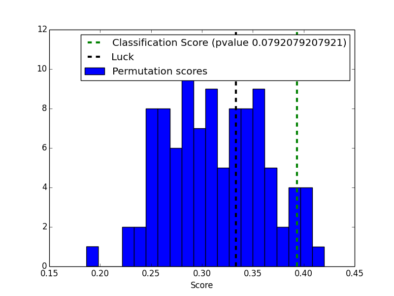

Test with permutations the significance of a classification score¶
In order to test if a classification score is significative a technique in repeating the classification procedure after randomizing, permuting, the labels. The p-value is then given by the percentage of runs for which the score obtained is greater than the classification score obtained in the first place.
Script output:
Classification score 0.393333333333 (pvalue : 0.0792079207921)
Python source code: plot_permutation_test_for_classification.py
# Author: Alexandre Gramfort <alexandre.gramfort@inria.fr>
# License: BSD 3 clause
print(__doc__)
import numpy as np
import pylab as pl
from sklearn.svm import SVC
from sklearn.cross_validation import StratifiedKFold, permutation_test_score
from sklearn import datasets
##############################################################################
# Loading a dataset
iris = datasets.load_iris()
X = iris.data
y = iris.target
n_classes = np.unique(y).size
# Some noisy data not correlated
random = np.random.RandomState(seed=0)
E = random.normal(size=(len(X), 2200))
# Add noisy data to the informative features for make the task harder
X = np.c_[X, E]
svm = SVC(kernel='linear')
cv = StratifiedKFold(y, 2)
score, permutation_scores, pvalue = permutation_test_score(
svm, X, y, scoring="accuracy", cv=cv, n_permutations=100, n_jobs=1)
print("Classification score %s (pvalue : %s)" % (score, pvalue))
###############################################################################
# View histogram of permutation scores
pl.hist(permutation_scores, 20, label='Permutation scores')
ylim = pl.ylim()
# BUG: vlines(..., linestyle='--') fails on older versions of matplotlib
#pl.vlines(score, ylim[0], ylim[1], linestyle='--',
# color='g', linewidth=3, label='Classification Score'
# ' (pvalue %s)' % pvalue)
#pl.vlines(1.0 / n_classes, ylim[0], ylim[1], linestyle='--',
# color='k', linewidth=3, label='Luck')
pl.plot(2 * [score], ylim, '--g', linewidth=3,
label='Classification Score'
' (pvalue %s)' % pvalue)
pl.plot(2 * [1. / n_classes], ylim, '--k', linewidth=3, label='Luck')
pl.ylim(ylim)
pl.legend()
pl.xlabel('Score')
pl.show()
Total running time of the example: 6.66 seconds ( 0 minutes 6.66 seconds)